<div class="services-9 cards">

    <div class="overflow-blue"></div>

    <div class="container-small">

        <div class="title-1 cards__title color-white">Преимущества</div>

        <div class="row cards__slider">

            <div class="col-md-6" style="" aria-hidden="true" tabindex="0" role="tabpanel" id="slick-slide30"
                 aria-describedby="slick-slide-control30">

                <div class="cards__item cards-1 cards__top">
                    
                    Цветовая устойчивость
                </div>

                <div class="cards__item cards-1 cards__bot">
                    
                    Великолепная эстетика благодаря характеристикам современной керамики (широкая цветовая гамма;
                    прозрачность, идентичная зубу; возможность многократного послойного нанесения)
                </div>

            </div>
            <div class="col-md-6" style="" aria-hidden="true" tabindex="0" role="tabpanel" id="slick-slide31"
                 aria-describedby="slick-slide-control31">

                <div class="cards__item cards-1 cards__top">
                    
                    Прочность
                    
                </div>

                <div class="cards__item cards-1 cards__bot">
                    
                    Минимальная обработка зуба под винир (работа в пределах эмали)
                </div>

            </div>
        </div>
        <!-- /.row -->

    </div>
    <!-- /.container-small -->

</div>